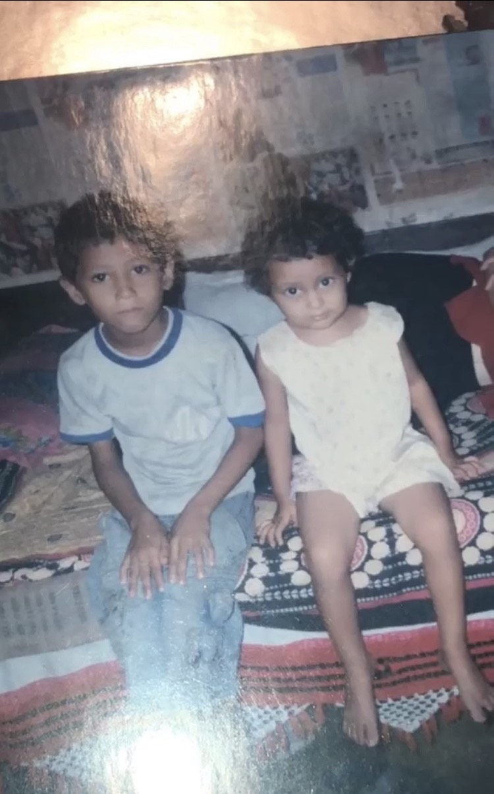

Family and Friends
Family
Parents
We may have our differences, but nothing’s more important than family. – Coco
My mom’s name is Puspa Bhattarai. She was twenty-eight when she gave birth to her favorite daughter. Currently, she is forty-three and she in my top five list of favorite people in the world. She’s about 5’3, with twinkling brown eyes, black licorice hair and is the cutest Asian around. Ever since I was little, we’ve been very close. We’re like yin and yang when she’s happy I'm happy, when she's sad, I’m sad. When I was small she used to be a stay at home mom, so she’s been around my whole life. I can’t begin to imagine a life without my mom. Sometimes she randomly cuts up fruit and gives it to me while I'm doing my homework, and that might not seem like a big deal but, it shows me that no one is ever going to love me the way my mom does. My dad’s name is Tanka Bhattarai. He was thirty-two when I was born, but currently, he’s forty-seven. When I was younger, he used to work security in India, so he was gone for one year of my life but other than that, he’s always been there for me. My dad is very strict. I must always have good grades and good manners. I don’t know about the good manners part but all my life I’ve had good grades. In my Asian household, A is good, B is decent, C means kicked out of the house. I believe that I have good grades, not due to the fact that I'm literally forced to but, because of the fact that my parents traveled all the way across the world, leaving their home country for my brother and I to have a better education and if I let them down then I basically fail as a daughter. My dad has set very high standards for my brother and I, and I don’t intend on letting him down.
My Brother
My brothers' name is Sagar Bhattarai, and he’s currently 18 years old. He’s the golden child and everyone, not so secretly, loves him more. He graduated in 2018, got a soccer scholarship to Laramie Community County College in Wyoming along with his best friend, Kieta, and they both currently live in the LCCC dorms. He comes to see us when he can, and I look forward to his visits. I can genuinely call him my best friend. We do lots of little things together, for instance, we go to put gas in the car, or we go to Walmart to grab something, and I know it sounds lame, but to me, it’s really sweet. We’re super close, and I don't know what it would be like if we weren't. I know lots of people who aren't close with their siblings and to be completely honest, I can't comprehend how they live like that.

Other Family
I have lots of other people in my non-immediate family that I love to death. I’m closer and more in contact with my dads' side. Whenever my family moves, my dads' side of the family moves with us. It’s just the perfect scenario with them because I’ve never felt lonely no matter where I was. We're like a little tribe. My Ama (dads mom) got married when she was nine, and my grandpa was fourteen. She had her first kid, my aunt Champa when she was eighteen and my dad at twenty-two. She then proceeded to procure Tara, Bal, and Chandra. My aunt, Champa, and her husband currently live in Texas and have three kids that I look up to so much. My other aunt, Tara, and her husband live in Idaho and also have three kids, we used to live a few houses away from eachother, and I love them to death. My uncle, Bal, and his wife live in Pennsylvania with both a son and a daughter and my Ama. My last uncle, Chandra, which I love, and his wife live in Pennsylvania and have one daughter. I don't get to see them often anymore but these are some of my favorite people in the whole world. I appreciate and love them so much because I know I’ll never be alone.
Friends
You can always tell a real friend: when you’ve made a fool of yourself he doesn’t feel you’ve done a permanent job. -Laurence J. Peter
Yzabella Eggers, she’s my best friend and I love her with all my heart. She’s my 5'2, has shiny light flowy brown hair with the most genuine smile I have ever seen. Yzabella is a brutally honest person who doesn't take crap from anyone, and she’s helped me become the person I am today. This is cliche, but she’s my other half. We have this thing called Tea Time, and basically, all we do is sit together and talk about the most random things. For instances, we’ve had discussions about other people, death, conspiracy theories, and just life in general. But don’t get it twisted; these aren’t just normal conversations. They’re like Socratic Seminars but better, and we rarely disagree. Most Tea Times happen in Yzabella’s basement or on her porch. We’ve had many good conversations and one time we even cried while talking about mirrors and our reflections. I come over so often that her mom is my second mom. Overall she is my other half, there aren’t enough words to describe how amazing she is and I don’t know what I would do without her.